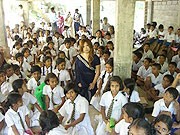

「スリランカに対する知識が全くなかったので、参加する前は全てが不安でした。
単純に、手頃な金額で、現地で外国語に漬かれる、と思ったので、この留学プログラムに決めました。
英語のレッスンは、初めのステイ先の英語の先生であるおばあちゃんは、1日中一緒に過ごして、発音や『英語で話す』事に慣れる事を教わりました。
レッスンで学ぶ事も確に多かったですが、普段の生活中で本当にいろんな事を教わりました。
今でも本当のおばあちゃんの様に思えるぐらいです。
次のシンハラ語の先生も、経験豊かで、本当に丁寧に教えて頂きました。
初めのクルネーガラの子供のバースデーカードをシンハラ語で書きたい、と言ったら、一文字一文字なぞりながら教えてくれたり、机上のレッスンですぐに退屈そうにしてしまう私を、街に連れて行ってくれて、優しいシンハラ語と英語で会話しながら、いろんな所を案内してくれました。
二人とも宿題はほとんどなく(私の希望で)、無駄な事は何もない、生活に密着した、というかんじのレッスンをしてくれました。
本当に感謝しています。
スリランカでのホームステイは、想像よりも快適で、何でもあるし、全てが新鮮で楽しくてしょうがなかったです。
不便に思った事は何もありませんでした。
習慣の違いに戸惑う事もありませんでした。
初めのクルネーガラのファミリーもカダワタのファミリーも、本当に親切で、時には厳しく、本当の家族の様に思える程でした。
日本から遠く離れた異国に一人でいる、と思った事は一回もありませんでした。
時にはケンカしたり、わがまま言ったりして迷惑をかけましたが、寂しいと思う事は本当になかったです。
ボランティアはホストマザーの勤務する小学校へ行きました。
1クラス50人ぐらいの生徒に切り紙と歌を教える事になっていましたが、学年全員が私の授業(と言えるかはわかりませんが)を受けたいと言ってくれて、急遽200人の子供達に教える事になりました。
子供達はすごいパワーで、思わず教師であるホストマザーを尊敬してしまいました。
すごくいい経験になったと思います。
低開発村視察はいい経験になりましたが、残念ながら私にはあまり興味は持てませんでした。
同行者のワヤンバ職業訓練校指導者の方はすごく面白くて気さくな方でした。親切にして頂きました。
全く知識がなかったので、スリランカに対する先入観はありませんでした。
一言で言うなら、活気と熱気がすごい、と思いました。
発展途上国特有のパワーがあると思います。
お金のために、日曜日のために働く日本人とは違い、生きるために働く、生きる事に一生懸命というかんじを受けました。
人は本当に良くて、温かいです。
ぜひまたスリランカへ行きたいと思います。
たくさんの人に出会いましたが、本当にもう一度会いたい、と思える人達がいっぱいいます。
虫よけは多めに持って行った方がよかったかなと思いますが、私は現地のアーユルヴェーダの虫よけオイルにお世話になりました。
持っていけばよかったというよりは、全て現地調達でよかったな、と言うかんじです。
『何となく』選んだスリランカでしたが、将来的にはむこうで何か仕事ができたら、と思うぐらい大好きになりました。
何もわからなくて不安だらけの私に、逢坂さん、Missマーネルともにすごく親切にして頂きました。
すばらしい機会を与えて下さった逢坂さんとMissマーネルに心から感謝しています。」